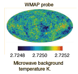
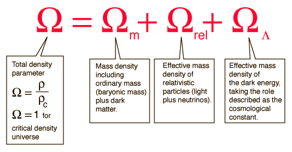
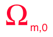
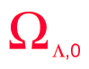

Density Parameter, Ω
The galaxies we see in all directions are moving away from the Earth, as evidenced by their red shifts. Hubble's law describes this expansion. Remarkably, study of the expansion rate has shown that the universe is very close to the critical density that would cause it to expand forever. It is customary to express the density as a fraction of the density required for the critical condition with the parameter Ω = ρ/ρcritical so that Ω = 1 represents the condition of critical density.
| The expansion of the universe has been studied in a number of different ways, but the WMAP mission completed in 2003 represents a major step in precision and the results quoted here will be mainly those from WMAP. |

|

It is common practice to give a subscript 0 to these quantities at the present time.
|  | The mass density at the current time was assessed by WMAP to be Ωm,0 = 0.27 +/- 0.04. But the assessment of ordinary or baryonic matter was only 0.044 +/- 0.004, so baryonic matter constitutes ony 17% of the matter of the universe, the remainder being classified as "dark matter". |
| The equivalent mass density of the relativistic particles, made up of electromagnetic energy and neutrinos, is assessed by WMAP to be Ωrel,0 = 8.24 x 10-5. This implies that in the comparison with mass, the mass is strongly dominant over radiation in the current era. At early times in the universe, radiation was dominant over both mass and dark energy. |
|  | The fraction of the effective mass of the universe attributed to "dark energy" or the cosmological constant is ΩΛ,0 = 0.73 +/- 0.04. With 73% of the influence on the expansion of the universe in this era, the dark energy is viewed as the dominant influence on that expansion. The previous history of the big bang is viewed as being at first radiation dominated, then matter dominated, and now having passed into the era where dark energy is the dominant influence. |
The sum of the contributions to the total density paramater Ω0at the current time is
Ω0 = 1.02 +/- 0.02
indicating that the universe is very close to critical density or Ω =1. Critical density is calculated to be ρc,0 = 9.47 x 10-27 kg/m3
Of this critical density, ordinary matter (baryonic matter) is thought to make up only about 4%. This baryonic matter is equivalent to about 1 hydrogen atom per 4 cubic meters of space.
|
Index
Reference
Carroll & Ostlie
Ch 29 |